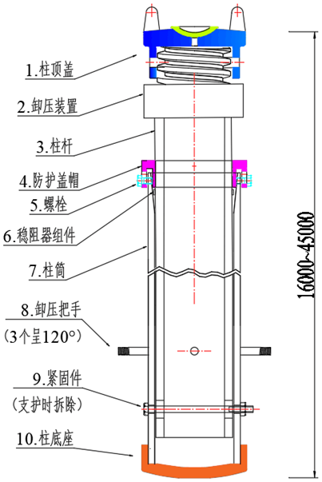
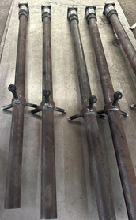
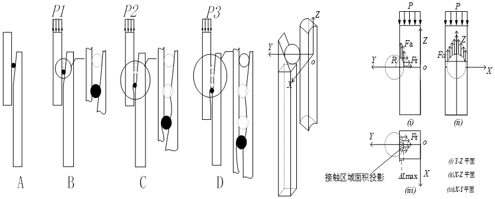
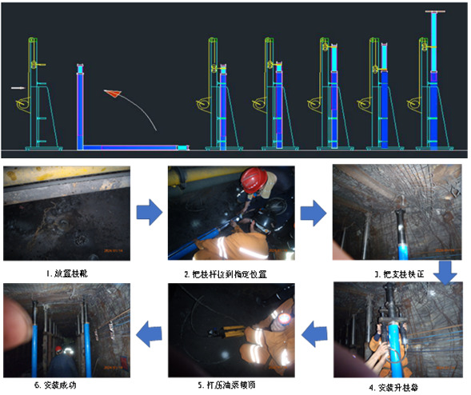
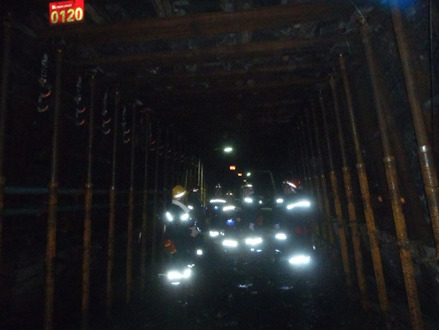
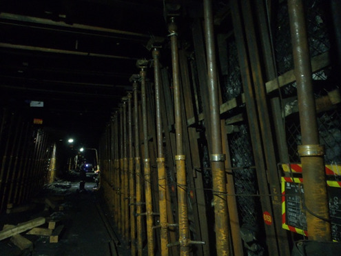
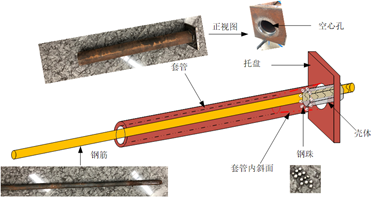
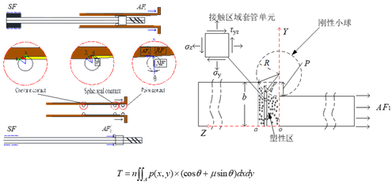
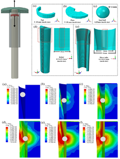
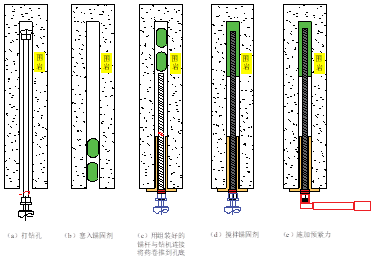

中国矿业大学（211）土木工程硕士（工程力学方向；研究方向：冲击支护、原位 CT 扫描）。围绕极近距离煤层、 动压巷道等复杂采动条件，从事"机理建模 — 室内试验 — 数值模拟 — 现场工业性试验"全链条研究， 参与 3 项企业重大横向课题，累计科研经费 427 万元，形成支柱、锚杆两类吸能支护装备与成套技术。
三条主线共同指向同一个工程科学问题：强采动、极近距离、大断面条件下，巷道围岩能量如何释放，支护如何"吸能而不失效"。 我的工作贯穿理论建模、结构研发、参数优化、现场施工与效果验证五个环节，并在此过程中形成了两项核心装备技术。
以"金属塑性流动 + 摩擦耗能"为共同物理内核，先后研发两类支护装备：
把巷道变形视为能量输入—积聚—耗散—释放的动态过程：
从实验室走向工作面，形成可复制的技术闭环：
Abaqus / FLAC3D / PFC / COMSOL，含大变形、接触非线性与应变率效应。
结构力学建模，Matlab 求解高阶常微分方程组，等效巷宽与减跨解析。
让压装置承载/让压性能测试、卧式拉力机与分离式霍普金森压杆（SHPB）。
支护设计、强度校核、底板比压、钻孔窥视、围岩变形监测与预紧力工艺。
面向煤矿井下切眼开拓、工作面回撤、沿空留巷、窄煤柱等"大断面、大动压、难支护"区域， 研制替代木支柱与液压单体支柱的全机械式稳阻让压支柱，并完成产品化（使用说明书 + 产品画册）。
煤矿井下切眼开拓、工作面回撤、沿空留巷、窄煤柱等区域普遍存在断面大、顶板压力高、采动变形强、 局部空间受限及支护困难等问题。传统木支护承载能力和稳定性有限；液压支柱依赖泵站、管路等辅助设备， 在液压设备难以到达或需要长周期支护的场景下存在安装不便、维护量大、泄漏污染及重复利用成本高等局限。 亟需一种具备高承载、稳定让压、大行程适应变形、安装便捷、低维护特点的新型支护装备。


| 型号 | 最大支撑高度 (mm) | 工作阻力 kN / 等效 MPa | 行程 (mm) |
|---|---|---|---|
| DJW4000/450 | 4000 | 450 / 35 | 1600 |
| DJW3800/450 | 3800 | 450 / 35 | 1520 |
| DJW3500/450 | 3500 | 450 / 35 | 1400 |
| DJW3200/450 | 3200 | 450 / 35 | 1280 |
| DJW2800/450 | 2800 | 450 / 35 | 1120 |
| DJW2500/450 | 2500 | 450 / 35 | 900 |
| DJW2200/450 | 2200 | 450 / 35 | 780 |
| DJW2000/450 | 2000 | 450 / 35 | 700 |
| DJW1800/450 | 1800 | 450 / 35 | 620 |
| DJW1600/450 | 1600 | 450 / 35 | 530 |
注：单根支柱稳阻力允许 ±5% 波动；初撑力由专用升柱器提供，≥60 kN（等效 ≥6 MPa，以 110 mm 活塞面积计）， 满足并优于同条件液压支柱初撑力；稳阻下缩行程可达支护高度约 40%；根据需要可开发稳阻力 450~1000 kN 的型号。
针对西铭矿 8#/9# 极近距离煤层（层间距平均 2.31 m）下层煤巷道大变形难题，提出"等效煤柱"支护理念， 研发高强稳阻吸能单体支柱，并在 49707 轨道顺槽完成工业性试验验证。
西山矿区为典型近距离煤层联合开采。上层煤开采扰动造成下层煤顶板、围岩破裂损伤，顶板不易维护； 回采巷道多采用棚式支护，变形严重时补打液压单体支柱；上下煤层回采巷道错距留设缺乏理论依据， 保守起见通常内错布置，导致煤柱尺寸过大、资源回收率下降，且巷道顶板为上层煤采空区、顶板破碎、 有效锚固厚度薄，锚杆难以发挥作用。




在巷道两帮架设高强稳阻吸能单体支柱，配合钢带，将大断面巷道等效变换为常规断面巷道： 通过增加支点、缩短受力跨度，显著降低顶板弯曲应力与挠度，削弱硐顶松动围岩压力。
无支护时峰值集中于巷道上隅角及顶板上方；支护后顶板上方高能区显著弱化，体现"减跨"作用。
支柱在与围岩协同变形中具备明显吸能能力，而非提高围岩本体强度。
高能量释放区明显收缩、峰值位置远离巷道，显著降低动能/震动能快速释放风险。
49707 轨道巷分别采用"铁棚+锚杆+锚索+金属网"联合支护与高强稳阻吸能机械式单体支柱支护， 通过十字测点法进行为期 40 天的围岩变形观测（测站每隔 50 m 布置一处，支柱段 1#~3#，原支护段 4#~6# 为对照组）。
横轴以 264 mm 为满量程，红色虚线为 100 mm 警戒值。传统支护段顶底板移近量与两帮变形均超过 100 mm 警戒线， 遇断层、陷落柱时顶板明显下沉、工字钢严重变形；支柱试验段顶底板移近量与两帮变形分别降至 23~55 mm 与 12~40 mm，降幅约 74%~79% 与 73%~82%，均未达预警值。 且该试验段先于传统支护段掘进、已历经掘巷扰动期，结论更为保守可靠。
支柱主体由柱杆、柱筒、刚性小球（钢珠）三部分组成：柱杆为圆管，柱筒内壁为部分斜面圆管， 二者通过均匀放置在斜面上的钢珠连接。顶板来压达额定工作阻力时，钢珠压轧柱体接触面， 使金属晶体发生塑性延展，从而使柱杆在柱筒内滑动形成稳阻回缩。由于金属在塑性阶段强度恒定， 支柱受力后不会出现支护强度降低或失效。
针对华阳二矿 15# 煤动压巷道帮鼓、底鼓大变形与常规锚杆破断失效问题，从能量演化角度揭示机理， 研发"杆体—套筒—轴承钢珠"结构的高强稳阻吸能锚杆，在 151207 回风顺槽 300 m 试验段开展现场应用与全过程监测。
根源在于：临近采空区的动压巷道，在侧向支承压力与上覆岩层压力共同作用下，一侧煤柱成为承担上覆岩层压力的核心区域。 当帮部超过极限承载能力，便通过持续塑性变形释放能量，而释放总是从最薄弱处开始—— 帮部主承载区与底板无支护区，从而导致帮部与底板变形剧烈、支护失效。
锚杆通过独特的"杆体—套筒—轴承钢珠"结构，利用金属塑性流动的切削与摩擦效应， 将帮部围岩变形产生的能量主动、可控地转化为套筒的塑性流动能，实现"高延伸率 + 稳定工作阻力 + 高效吸能"的协同。 它能与帮部围岩协同变形，在适应大变形的同时持续提供稳定支护阻力，抑制变形发展、减少塑性区、 增强锚杆—围岩协同承载能力。




| 监测设备 | 数量 | 用途 |
|---|---|---|
| 锚杆轴力计 | 150 个 | 实时监测锚杆工作阻力 |
| 无线应力传感器 | 80 个 | 煤柱深部应力变化 |
| 表面位移计 | 30 台 | 帮部表面位移 |
| 高精度数据采集仪 / 传输设备 | 12 套 | 配套 DASP 测试分析软件 |
| 巷道变形实时监测系统 | 1 套 | 含软件平台与服务器，井上数据中心 |
两个项目共享同一物理内核——金属塑性流动切削 + 摩擦耗能， 分别落地为「支柱」与「锚杆」两类装备，形成"理论建模 — 实验室验证 — 数值模拟 — 现场优化"闭环技术体系。
五部分构成：柱顶盖、卸压装置、柱杆、稳阻器（钢珠）、柱筒、柱底座。 柱顶盖开口端为碗状结构，可在活柱顶端有限转动以应对顶板不平整、防止偏心受力；柱底座采用外球面设计。
「杆体—套筒—轴承钢珠」结构。依托课题组 10 余年积累的 "基于塑性流动特性的锚杆杆体—钢珠—套筒相互作用机制"。
构建巷道围岩变形破坏能量演化模型，提出深部巷道冲击失稳能量判据，计算复杂应力状态下煤岩体能量积聚与释放的时空分布特征。
通过增加支点、缩短跨度实现"减跨控制"，已形成专利《一种等效巷宽支护方法及装置》（CN122407250A）。
受载煤岩孔裂隙细观结构实时演化特征研究，参与《一种煤岩体高分辨率 CT 原位三轴压缩渗流装置》专利（审中，2/8）。
资格证书：CET-4（考研英语 74 分）、全国计算机二级证书、C1 驾驶证
熟练使用 PFC、COMSOL、Abaqus、FLAC3D、Matlab、CAD、Origin、SPSS 等工具； 能利用 Agent 搭建 MCP 通过终端连接各大软件，提升数值建模与数据处理效率。
系统掌握结构力学、材料力学、岩石力学、弹塑性力学等基础理论， 能够结合工程问题建立力学与数学模型并完成分析验证；兼具室内试验、数值模拟与现场经验， 能快速把理论转化为现场可落地方案。